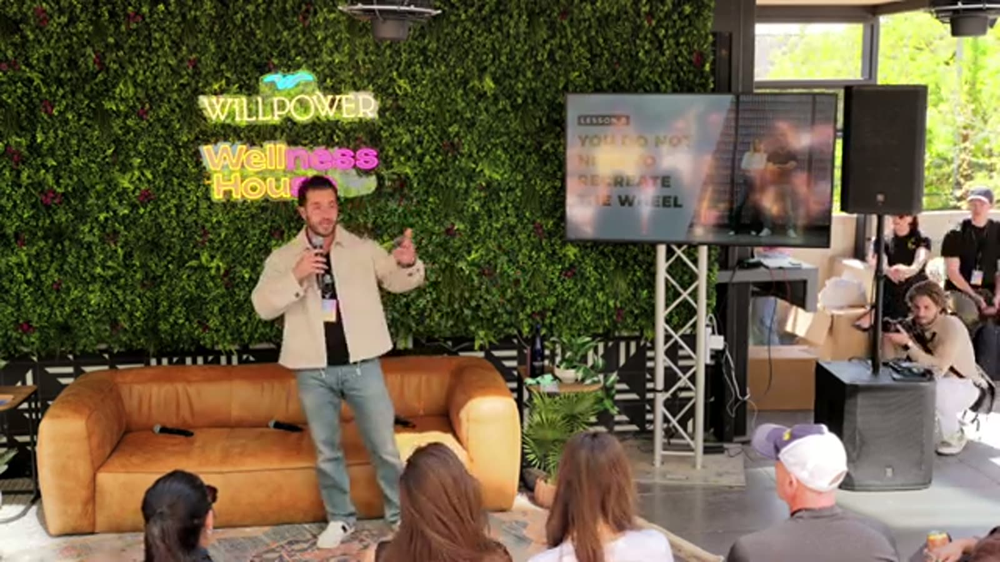

The 10 years everyone skips
People look at Bloom and see a two year overnight success. Energy drink brand, Gen Z marketing, TikTok machine.
They miss the 10 years underneath it.
Greg LaVecchia and his wife Mari started by posting her fitness transformation on Instagram in 2018. Then they ran paid ads on it.
In 2018! When everyone else was handing coupon codes to Gymshark and waiting on the algorithm.
Treating your personal brand like a business was taboo then. He did it anyway, and every flashy thing since sits on that one call.

Four macro shifts, none of them on his roadmap
COVID. TikTok launching. TikTok Shop. GLP-1s.
Greg walked all four. He planned none of them.
When COVID hit he moved to LA and built what became the largest in-house CPG influencer marketing agency in the country. When GLP-1 adoption went vertical, he reformulated to meet the Ozempic user where they already were.
His ask of the room was simple. Keep your eyes open for this year's version of cheap Meta ads.
"I am more than happy to let Poppi buy a Super Bowl ad and tell everyone about better-for-you soda. And then we are also available in Walmart and Target."
Greg LaVecchia, Co-founder, BloomLet someone else pay to teach the market
Bloom came late to greens powder, late to energy, late to better-for-you soda. Greg could not care less.
Athletic Greens pays Joe Rogan to explain what a greens powder even is. Red Bull sends a guy to space to build the category.
When they finish, Bloom shows up at the same retailers at half the price, tasting better, formulated better.
He put it flat: "I love saturation because I hate spending money on educating people."
His model is the Ring doorbell. That founder did not invent the doorbell camera. He made the existing thing 10x better. Whole play.
Move five times in five years if that is what it takes
Philadelphia. New York. Boulder. Brooklyn. Los Angeles. Now Austin.
Every move was on purpose. Boulder was a year and a half of seven day weeks to get away from hometown distractions. LA was the influencer hub in 2020.
Austin, in his words, is the CPG entrepreneurship hub of America in 2026.
Here is the advantage, and it is almost unfair. Most of his competitors will not move, because moving is hard.
100 SKUs, two goals, always
Someone in the room pushed him on it. You preach focus and you run over 100 SKUs. How does that add up?
Most of those are flavor variants. Inside the actual business he works two things at a time.
Right now: energy and soda. That is it.
"I am 100% in Bloom for 10 years straight. I do not invest in other brands. I don't run other brands. Focus kills and that is what has let us win."
"I call them tsunamis. Very loud moments instead of peanut butter spread."
Greg LaVecchia, Co-founder, BloomWhen Bloom launched on Amazon they bought the front page for 24 hours. When they went into Target the goal was turning the entire Target website green.
Pick one channel. Concentrate everything. Take it over. Move to the next.
The Slumdog Millionaire principle
Bloom's top two pre-workout flavors six years ago were Glacier Crush and Crisp Apple.
Today their top two energy flavors are Glacier Crush and Crisp Apple.
Same two. Six years apart. Data kept from a product line they do not even sell any more.
You connect the dots looking backward. The pre-workout company was the research, and the two year overnight success is a 10 year community-building career finally paying out.
How Bloom got into Target without the pitch
Old way to pitch Target: buy billboards near the Minneapolis HQ so buyers see you on the drive in.
Greg's way: find out who the Target buyers actually follow on Instagram, hire those exact creators, then email the buyers.
By the time Bloom reached out, the buyers were already seeing the brand everywhere they looked.
"People forget that humans work at Target. They make emotional decisions."
The Keurig Dr Pepper deal, and what it actually bought
That deal happened because Bloom partnered with Nutrible first. Nutrible carries the distribution and commercialization load, Greg works on what he wants to work on.
Bloom now rides Dr Pepper trucks across America.
"One plus one equals three. We have a very large slice of a far larger pie than Bloom could have ever been if we owned the entire pie."
What Greg is watching right now
Three things.
Retail revenue thresholds falling (Target used to want $30M before a meeting, he thinks it is closer to $10M or under now). TikTok Shop still hot. GLP-1s still reshaping what people want from functional products.
Asked for one growth hack, he said surround yourself with people younger than you.
"They know more than me. I'm 30. I'm already an uncle now." The 20 year olds in his network are already millionaires building things he cannot predict. That is the point.
The only edge that held for 10 years
"To win the game, you just need to stay in the game."
His real advantage was outlasting people who took the acquisition, got comfortable, or went chasing a diversified portfolio.
Bloom just kept showing up. When the others leave, their shelf space is yours.
What to take home
- Greg scaled D2C to $25M on Shopify, then pointed his whole email and SMS list at Amazon. He gave up the D2C community to own the channel where beverages actually move. Know your lane.
- Moonshots only. First retailer was a nationwide Target launch. "We only take large swings" is the literal strategy.
- The influencer arbitrage: find who the buyers follow, hire those creators, then send the email. You get emotional buy-in before the revenue justifies it.
- Concentrate the budget. One channel, everything into it, create the moment, move. Peanut butter across six channels is six mediocre campaigns.
- Brand power means never starting from zero. Pre-workout to greens to energy to soda, community intact, because the brand carried every time.
- The 10 years is the story. Everyone wants the two year version, and the room that gets you through year six is the one worth paying for. Growth Through Community.